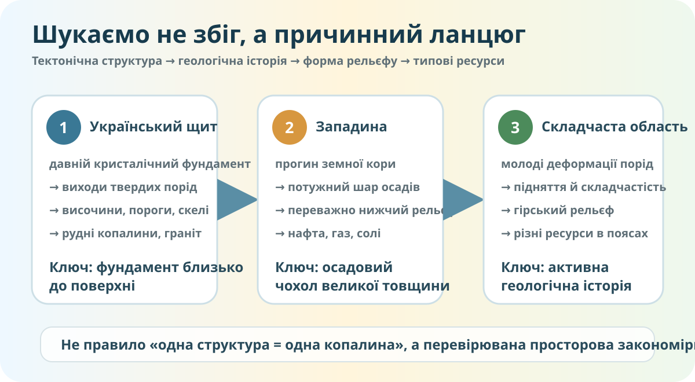

Проблема практикуму
Чому Криворізький залізорудний басейн, нафтогазоносні райони Дніпровсько-Донецької западини та гірські області Карпат просторово не випадкові?
Не плутаємо закономірність із магічною формулою «одна структура = одна копалина». Геологія трохи складніша за гороскоп.

Визначте геологічний сценарій
A. Кристалічний фундамент близько до поверхні
Давні магматичні та метаморфічні породи, виходи гранітів, рудні родовища.
B. Глибокий прогин і потужний осадовий чохол
Накопичення осадів упродовж тривалого часу, сприятливі умови для нафти й газу.
C. Молоді складчасті деформації та підняття
Гірський рельєф, складна будова порід, різноманітні ресурси в окремих поясах.
Фізична карта: де структура «видима» в рельєфі?

Фізична карта України, Wikimedia Commons, CC BY-SA 3.0. Карта показує рельєф; вона не є тектонічною картою.
Знайдіть три докази
- На фізичній карті визначте одну височину в межах поширення Українського щита.
- Знайдіть Карпати й поясніть, чому гірський рельєф узгоджується зі складчастою будовою.
- Для Дніпровсько-Донецької западини не шукайте «величезну яму» на поверхні: поясніть, чому тектонічна западина не обов’язково має бути западиною рельєфу.
Корисні копалини: перевіряємо за реальними геоданими
Держгеонадра вказує на безкоштовну геологічну карту й інтерактивні карти родовищ, запасів та типів корисних копалин на державному інформаційному порталі. Використайте їх як джерело просторових доказів.
Офіційне джерело: Державна служба геології та надр України.
Зіставте ресурс із геологічною ситуацією
Заповніть причинну матрицю
| Тектонічна структура | Геологічна ознака | Типова риса рельєфу | Приклад ресурсу | Наскільки сильний доказ? |
|---|---|---|---|---|
| Український щит | Давній кристалічний фундамент | |||
| Дніпровсько-Донецька западина | Потужний осадовий чохол | |||
| Карпатська складчаста область | Молодша складчастість і підняття |
Пастка 1
«Якщо є височина — там обов’язково щит».
Ні. Рельєф формується не лише тектонікою, а й денудацією, акумуляцією, роботою води, льодовика, моря, вітру та діяльністю людини.
Пастка 2
«Якщо є западина — там обов’язково нафта».
Ні. Для родовища потрібна конкретна геологічна історія: джерело органічної речовини, умови перетворення, породи-колектори, покришки та пастки.
Доведіть або спростуйте
Практикум оцінюється за доказами, а не за кількістю натиснутих кнопок
Правильно зіставлені тектонічні структури, рельєф і ресурси.
Щонайменше три конкретні картографічні/геодані-докази.
CER із причинним механізмом і вказаними межами висновку.
Домашнє завдання
Повторити §§12–24. Завершити причинну матрицю. Обрати один ресурс України й оформити міні-доказ із трьох частин: де розташований → із якою тектонічною структурою пов’язаний → чому така будова сприяла його формуванню або збереженню.
Електронні матеріали: Всеукраїнська школа онлайн.